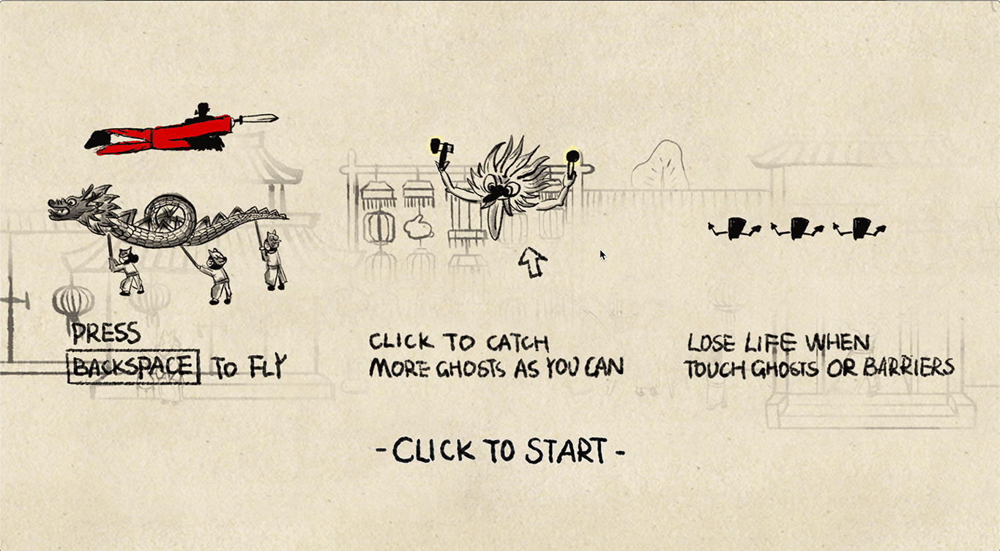

I'm working on Information design / Data visualization / Graphic design / ...
Projects｜项目
All
Data visualization
Book design
Exhibition
Branding
Illustration
+
+
+
+
+
+
+
+
+
+
+
+
About｜关于我
> Keen passion for data and design, analyzing and visualizing
> Creating information visualization for different fields and audience
> Working as a cooperative and open-minded person in multi-disciplinary teams
> Studying in visual communication design and industrial design
> Looking for a challengeable and inspiring working environment
Data: Helsinki Infoshare metadata API; Helsinki map API
Data analysis & cleaning by Python and Excel
Data visualization by Python, Gephi and Illustration
Data becomes an important part of our life, but how can we use them? City open data, as sharable resources, are used by the government, researchers and everyone including information designers. However, there are still challenges in fetching the data and visualizing them. In this data comic, I imaged the situation where everything on Earth disappeared and only city open data survived. What can be recovered from these data? The two characters found out Helsinki open data and start their own investigation.
“After Event X-2019, nothing left on the surface of Earth, which started a new period. Earth is renamed as Earth II by research groups now. A group of researchers are interested in the Earth II. They believe that humans must have left some trace on the Earth because of the technology development of human civilization. If there is anything left, the researchers can use similar technology as humans’ so that they can discover and decode the secrets of human.”
“...Although [021|50] and [50|001] are excellent researchers and pioneers in the data area. They were overwhelmed by criticism and lost both academic and financial support. The project was postponed for a long time. But the data on Earth II intrigues many people. After some years, a data experience park based on the data is built for other life forms to experience life like a human being...”
The process of this project starts from researching on the challenges of the city open data, then writing the story, designing the visualization according to the plots. In this story, the hypothesis is that these challenges come from the traits of the city open data. Among these plots, the logic of the research did by two characters is related to a series of questions.
Helsinki Region Infoshare: Metadata, Helsinki map API, Statistical Yearbook of Helsinki 2018, Food establishments in Helsinki, https://hri.fi/en_gb/
Helsinki city information model: https://kartta.hel.fi/3d/#/
Helsinki design manual: http://kaupunkitilaohje.hel.fi/en/
MOT sanakirjasto: http://www.kielikone.fi/
Data visualization|数据可视化
2018
If your little girl goes to kindergarten in Shanghai...
Data: China Statistics Bureau; Educational Statistics in 2016
Data analysis & cleaning by Excel
Data visualization by Illustration
This project started in a course in 2018. There was a series problem arisen in kindergartens in a different area of China. Young parents are paying more attention to pre-school education. I chose the government data of this basic condition to show another side of the education. Undoubtedly, information from these data is only a small approach to the whole vision.
Educational Statistics in 2016: en.moe.gov.cn/Resources/Statistics/
Data visualization｜数据可视化 / Book design｜书籍设计
2019
The trace
Data: Instagram posts with #iittala #arabiafinland; Interviews
Data scraping & text analyzing by Python
Data visualization by Illustration & InDesign
The Trace is a project for iittala about the life of the ceramics. Through approaching and interviewing the users who posted with #iittala or #arabiafinland, investigating in second-hand shops, the book is designed to show the relationship between human and products.
The Trace 这本书是与Fiskars旗下的陶瓷品牌Iittala、Arabia合作项目。在这个项目中，我试图追踪陶瓷产品的一生及其价值的流向，为打造品牌价值寻找新思路。通过收集instagram的话题#iittala和#arabiafinland，采访Instagram活跃用户，二手商店调查，将发现聚焦在人和物品之间的关系上。
The concept of visuals is to reveal the invisible trace of human and value. Therefore, the book is bound into two parts and the pink blur dot imitates the trace which left on the products.
The exhibition curated by Aalto University introduces Finnish design in Milan for 6 months. The concept of visual identity came from the title of the exhibition Everyday Experiments, which brought up change from repetition. The teamwork lasts for 6 months, from establishing concept to setting up the exhibition in Milan, mostly on visual identity and infographics with Adina Renner.
The concept stems from the phenomenon that we are treating the consumption of electronic appliances like our daily products which only used for a certain limited time. At the same time, we consumers can have unlimited choices from all different brands and the whole consumption behaviour brings out unlimited effect in the environment. This project aims to emphasize the problems appeared in every link in the whole lifecycle of electronic appliances and urge everyone to take responsibility.
The visual concept is from the poster of imagery supermarket. Smartphones are packaged as tomato sources because of similar shelf life. As the concept of planned obsolescence, this supermarket only sells electronic appliances with a limited guarantee period.
Visualizing Knowledge is an annual event on information design held at Aalto University and organized by MA students from the Department of Media. Knowledge includes a large range of stuff and information. In order to communicate with our audience, we design a dynamic VI system. The empty block indicates what the audience want to visualize out of their own interests. Besides, we also create unique visualizations based on attendee's interests. We hope it can also bring up conversations between the audience.
This time, Visualizing Knowledge 2018 also showcase student projects from all around the world during a one-day exhibition. The whole preparation teamwork lasts 6 months, mostly on showcase exhibition related design with Alessandra Del Nero.
这届的活动中我们新增了学生作品的征集展示，并在活动当天展览。我负责了这个新活动的策划，联络与推进，并和Alessandra Del Nero一起设计展览。
Prof. Rupesh Vyas – Project Lead, Creative Direction
Minna Ainoa – Producer Department of Media
Organizing Team
Art Direction: Adina Renner, Lilla Tóth
Team Lead: Adina Renner
Graphic Design & Production: Lilla Tóth
Showcase Curation & Design: Alessandra Del Nero, Qin Yang
PR & Communication: Pei-Yu Lin, Heini Kekki
–
Web Programming: Kevan Murtagh
Photography: Sebastian Wolf, www.sebastianwolf.photo
Data visualization｜数据可视化
2018
Stories in ...
Data: Film shot in certain cities in different genres
Data scraping & analyzing by Python
Data visualization by Illustration, RAWgraph & After effect
The city, as a container, collects different kinds of stories. After decades, the city has its own characters. For example, Paris is described as the city of love. These stories in films always projected people’s imagination for the city. The treemap shows the percentage of different genres of films from 2000 to 2017. Lager size of the genre indicates that there is more such kind of stories in this city.
The books include food and sceneries in my hometown. The stories are based on the well-known background from Chinese novelist Jin Yong. It tells about the daily life of a hero’s life in Jiaxing. The name of these books is from the name of Yanyu Pavilion. This pavilion is one of the famous historic sites in the city, which is also mentioned in the novel by Jin Yong. This project is my bachelor graduation design.
The exhibition ‘Behind the utopia’ create a new way for Design Museum to have a new understanding of their collection and meanwhile it gives visitors an opportunity to have a whole picture of Design Museum. The visualization addresses the following questions: How does the gender shift of designers relate to structural changes in Finnish manufacturing? Is the breakdown of objects representative of Finnish design as a whole, or under/over-represented? What are the factors that drive the popularity of different materials in different time periods? Does these visualization accurately reflect the changing design landscape?
Behind the utopia展览为芬兰设计博物馆提供了一种新的视角去理解馆内收藏，同时也为参观者提供了全面了解设计博物馆的机会。展览中三个部分的可视化围绕着以下问题展开：设计师的男女比例转变与芬兰制造业结构转变有什么关系？什么因素影响了不同时期流行不同的设计材料？这些设计品的归类能不能代表芬兰设计？
Working with Xiaoyi Xu, Lilla Toth
Data visualization｜数据可视化
2020
See you in the future
Data: Chinese Sci-fi novels from Chinese Sci-fi galaxy award from 1986 to 2011 (中国科幻银河奖第一届至第二十三届)
Data analyzing by Python
Data visualization by D3, Illustration
How do we think of the future? What do we wish to happen? Sci-fi novels may be the best places to find out the reason why the future is so fascinating. The words here are picked from the Sci-fi novels in Chinese based on their frequency. For example, the size of each word as it is shown here in the word cloud. These novels were a selection of award-winning works for Chinese Sci-fi galaxy award from 1986 to 2011 (中国科幻银河奖第一届至第二十三届).
Processing game with a story of Chinese old legend.
Screenshots of the game >>>

Barriers in the game >>>
Illustration｜插画
2019
Self-project
This illustration was for a multi-functional children desk marketing campaign, but unfortunately it wasn't selected in the end. It became a learning project for After Effect and Animation.